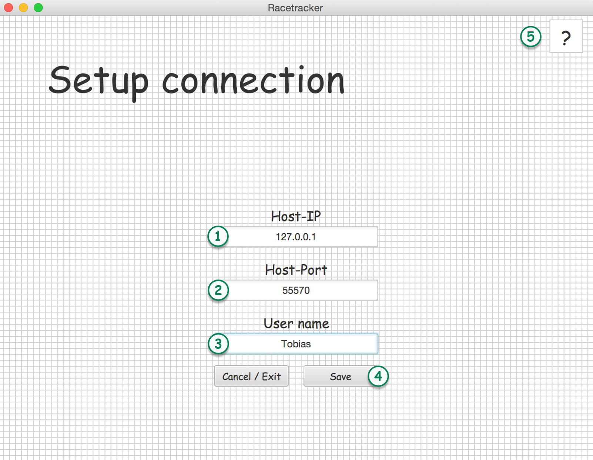

Welcome to Racetracker!
We are pleased to see you choosing Racetracker and play a game.
Let me introduce you to the game and show you some of the features you can expect from the game.
Setup connection
This is the first scene you will encounter after launching Racetracker.
In this scene, you have to set up a connection to a game server which can host games.

Enter a valid IP-V4 address for the host.
Enter a valid port for the host connection.
Enter a user name. If the user name you have chosen is already taken by someone else, a suffix will be added to make your name unique.
The Save-button will be enabled if all fields contains valid content.
The Save button will be enabled if all fields contain valid content. After pressing the button a connection to the host server will be established. If this is not possible, the host ip and port fields will be outlined by red. After establishing a connection to the server, your username will be sent and the field will be colored yellow. After getting confirmed by the server, the field will be outlined green and you will be redirected to the main scene of the game.
HELP: On every screen you will find a help button in the upper right corner. Pressing it, will show you a help for the current scene with additional information to all important subjects seen on the scene.